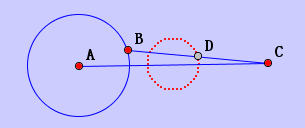

The action construct the locus of a point when another point is moving on an element.
First, select a point; then select the other point as well as an element( Line or Circle). In this way, JGEX will construct the locus of the first point when the second point is moving on the line or circle.
For example, D is the midpoint of BC. The red dash circle on the diagram is the locus of D when B is moving on circle(AB).
\
JGEX Help